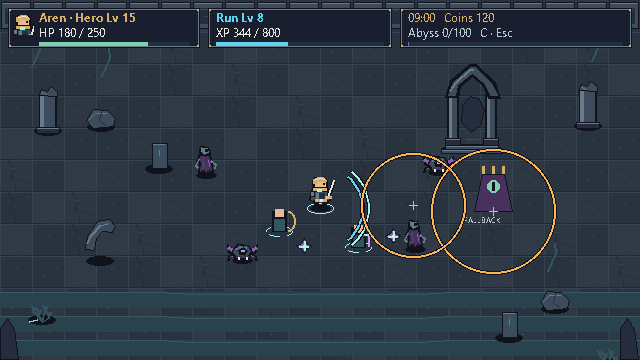
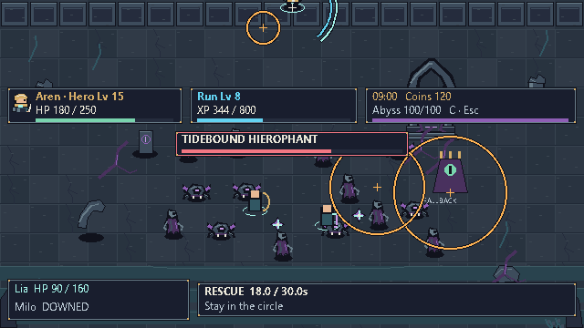
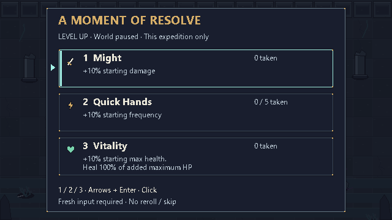
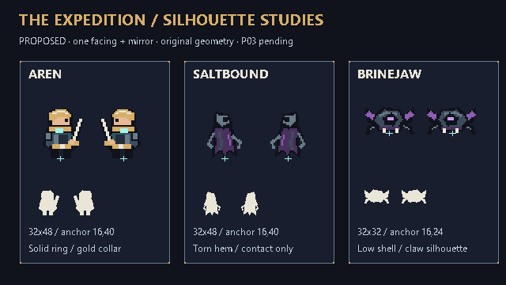
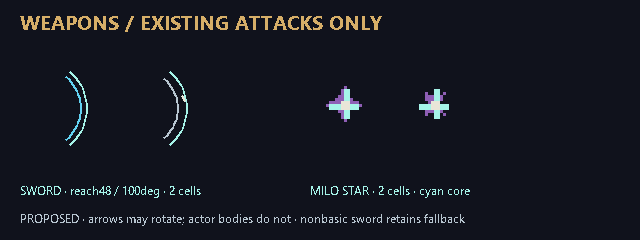
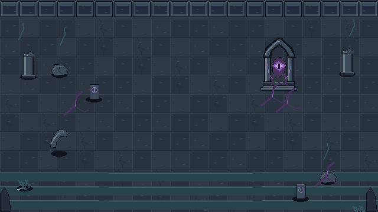
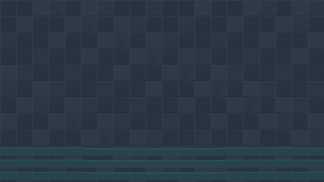
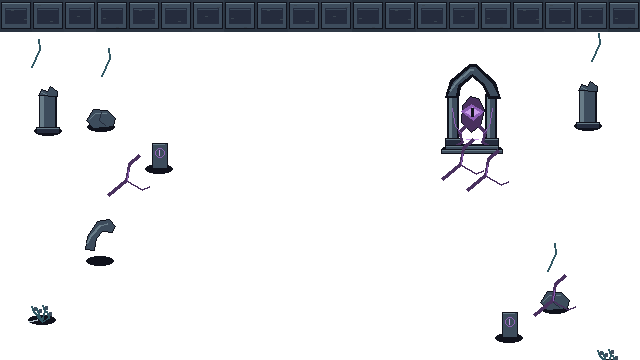

640 × 360
固定1×镜头 · 整数2× / 3×呈现
32×32地砖 · 32×48英雄画布
暗黑幻想海岸 × 可爱像素单位。以一位英雄、两种敌人与一个腐化神殿，验证统一的视觉语言。
固定1×镜头 · 整数2× / 3×呈现
32×32地砖 · 32×48英雄画布
原创动画格上限，初稿预计29格
≤16地砖 · ≤6模块道具
默认新增动态灯 / 动态阴影
全屏后处理 / 装饰粒子层
REAL 指来源真实，不表示生产美术已完成。以下为历史截图，非本轮运行结果。

冷石退后，友方浅青，危险橙边，腐化紫色；形状同时承担语义。
03 / INTERACTIVE DESIGN STUDY

可切换战况、倍率与历史画面；升级页支持点击、1/2/3、方向键和 Enter。
画板为原创绘制的设计样稿，不是游戏运行结果。三名新单位与神殿是概念稿；Lia/Milo及首领是明确保留的程序轮廓示意，未新增生产角色。剑来自 Aren，星来自现有 Milo，不给 Aren 新能力。完整 HUD 的矩形联合面积为56,496/230,400；12px关键文字。示例数据不代表存档或战斗数值变更。Esc/C详情与seed迁移仅是待审批方案。
布局与边缘位置 · 实际检查
白十字=脚锚。候选：边缘局部重排，允许身体上部在视口边界裁切；保持脚锚与临近危险可读。是否接受须你明确决定。不是实机遮挡验收。
04 / A MOMENT OF RESOLVE

世界暂停 · 仅本局
1 / 2 / 3 · 方向键 / Enter
无重抽 / 跳过
关键正文12px · 状态用形状及文字
05 / SMALL PARTY, DISTINCT SILHOUETTES


英雄攻击3格/15FPS适配12ticks；hurt用真实截止，死亡不延迟结算。事件视频只是采样规则示意，未证明游戏接线正确。
06 / THE SALTBOUND SANCTUM



上左绘制亮面，独立脚影；新增动态灯、动态阴影、全屏后处理与装饰粒子均为0。外围前景可在独立层审阅。
DESIGN TOKENS
系统字体预览 · 游戏继续内建字体
4 / 8 / 12 间距 · 一套边框
形状 + 文本，颜色辅助。图标为未批准概念。
查看七种交互状态 →关键文字≥4.5:1、边界≥3:1是设计阈值，最终仍须实机复核。disabled/error/pending均有明确原因或状态，不只依赖颜色。
07 / REVIEW BEFORE PRODUCTION
Aren / 两敌 / 神殿
剑弧 / 追踪星 / HUD / 升级
PNG + ORA + 动作与倍率板
生产精灵、SpriteFrames、TileSet、Theme、原生接线尚未交付。原有玩法和存档保持原样。
文字代替缺失参考图？
边缘裁切与HUD避让？
镜像明暗与额外压力样本？
完成本次设计交付后停止。G0/G1、计划/tasks与精确替换范围获批后，才可进入第4阶段。生产清稿与人工/实机/性能验收继续开放。